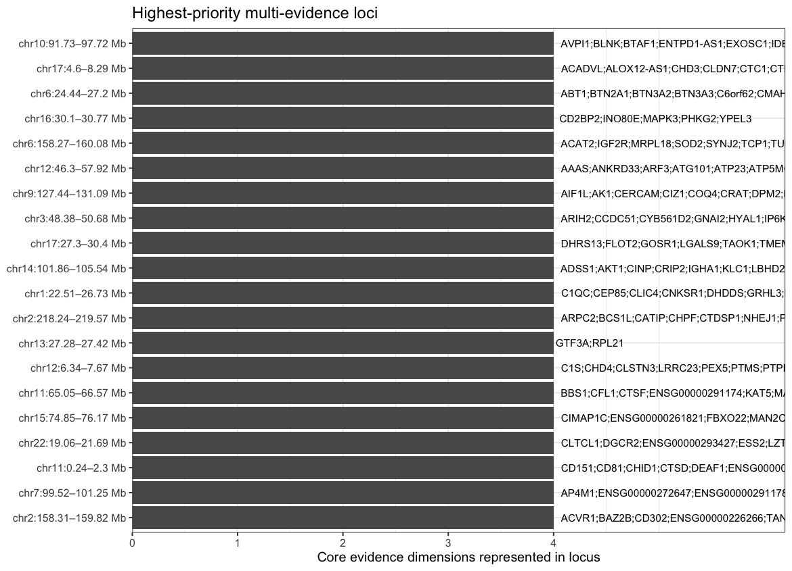
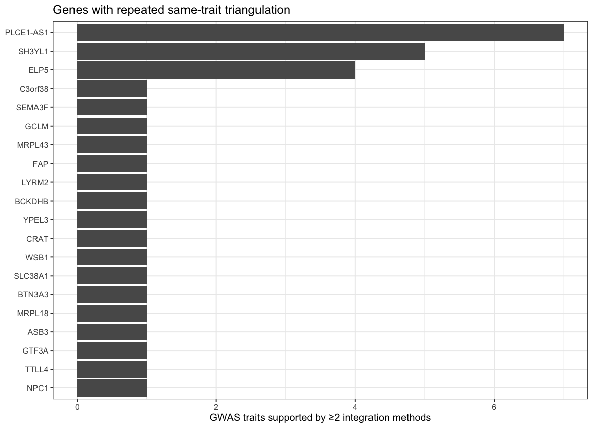
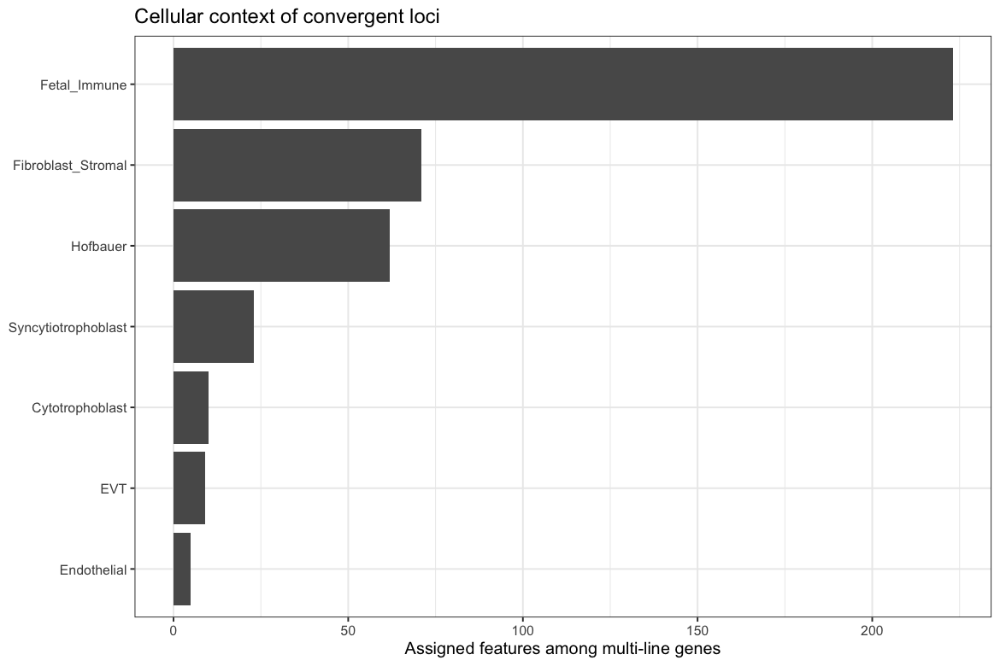

12 Integrated locus prioritization
12.1 Executive summary
This report integrates six analytical layers from the Placenta xQTL Atlas: baseline cis-xQTL discovery, SuSHiE fine-mapping, xQTL–GWAS colocalization (pairwise SuSiE-coloc and multi-trait colocBoost), TWAS, genotype × placental-cell-proportion attribution, and genotype × maternal pre-pregnancy BMI (G×ppBMI) interaction mapping.
The ranking is deliberately convergence-first. A gene receives one core evidence dimension for each of: high-confidence fine-mapping, GWAS shared-signal evidence, significant TWAS, and Tier-1 G×ppBMI discovery. SuSiE-coloc and colocBoost are combined into one shared-signal dimension because they interrogate the same underlying xQTL/GWAS relationship; agreement between both methods is treated as a strength bonus. Cell-type attribution and baseline xQTL recurrence provide biological context. Robust G×E Tier 2 is also a strength bonus rather than an independent line of evidence because Tier 2 was genetically preselected.
Current integrated yield. 3,325 genes have at least one core evidence dimension; 575 genes have ≥2 core dimensions, and 233 meet the report’s Tier-A convergence rule. 365 multi-line genes also carry independent Tier-1 G×ppBMI evidence. Across TWAS and colocalization, 44 gene × GWAS-trait pairs are supported by at least two methods. Approximate coordinate clustering yields 410 loci with ≥2 core evidence dimensions.
The highest-ranked multi-line genes in the current run are: YPEL3, MRPL18, SLC38A1, CRAT, SH3YL1, ELP5, PLCE1-AS1, SEMA3F. The leading approximate locus clusters include chr10:91.73–97.72 Mb, chr17:4.6–8.29 Mb, chr6:24.44–27.2 Mb, chr16:30.1–30.77 Mb, chr6:158.27–160.08 Mb. These labels are generated from the supplied data at render time.
12.2 1. Inputs and integration rules
| layer | path | available |
|---|---|---|
| xQTL | /Users/stbresnahan/Documents/GitHub/Placenta_xQTL_atlas/reports/./tables/xqtl_catalog_phenotype_level.tsv | TRUE |
| Fine-mapping | /Users/stbresnahan/Documents/GitHub/Placenta_xQTL_atlas/reports/./placenta_xqtl_report_inputs_20261010/data/extras/finemap_credible_sets.tsv.gz | TRUE |
| SuSiE-coloc | /Users/stbresnahan/Documents/GitHub/Placenta_xQTL_atlas/reports/./coloc/aggregated/coloc_best.tsv.gz | TRUE |
| colocBoost | /Users/stbresnahan/Documents/GitHub/Placenta_xQTL_atlas/reports/./coloc/aggregated/colocboost_clusters.tsv.gz | TRUE |
| TWAS | /Users/stbresnahan/Documents/GitHub/Placenta_xQTL_atlas/reports/./coloc/aggregated/twas_gene_results.tsv.gz | TRUE |
| Cell type | /Users/stbresnahan/Documents/GitHub/Placenta_xQTL_atlas/reports/./celltype_diagnostics_bundle/xqtl_celltype_annotation.tsv.gz | TRUE |
| G×ppBMI Tier 1 | /Users/stbresnahan/Documents/GitHub/Placenta_xQTL_atlas/reports/./gxe/gxe_tier1_significant.tsv | TRUE |
| G×ppBMI Tier 1 meta | /Users/stbresnahan/Documents/GitHub/Placenta_xQTL_atlas/reports/./gxe/gxe_tier1_meta.tsv.gz | TRUE |
| G×ppBMI Tier 2 | /Users/stbresnahan/Documents/GitHub/Placenta_xQTL_atlas/reports/./gxe/gxe_tier2_results.tsv.gz | TRUE |
| Gene map | /Users/stbresnahan/Documents/GitHub/Placenta_xQTL_atlas/reports/./placenta_xqtl_report_inputs_20261010/gene_map.tsv | TRUE |
Resolved integration inputs.
12.2.1 1.1 Core versus supporting evidence
| Dimension | Core line? | Operational definition |
|---|---|---|
| Fine-mapping | Yes | ≥1 locus with credible-set lead PIP ≥ 0.9 |
| GWAS shared signal | Yes | SuSiE-coloc call at PP4 rule used by coloc_best, or membership in a colocBoost xQTL–GWAS cluster |
| TWAS | Yes | gene-level ACAT q < 0.05 in ≥1 trait × weight-set cell |
| G×ppBMI Tier 1 | Yes | discovery-stage interaction q ≤ 0.05 |
| Cell type | Supporting | assigned primary cell type with G×cell q ≤ 0.05 |
| xQTL ancestry/modality recurrence | Supporting | signal observed across ≥2 ancestries and/or ≥2 modalities |
| G×ppBMI Tier 2 | Supporting | two-ancestry robust sensitivity definition; not independent because Tier 2 is genetically preselected |
| SuSiE-coloc + colocBoost concordance | Supporting | both shared-signal methods implicate the gene |
| Same gene × same GWAS trait | Supporting | ≥2 of TWAS, SuSiE-coloc, colocBoost support the same gene × trait pair |
The numerical priority_score is only a deterministic triage score. It
is not a posterior probability, Bayes factor, or causal probability.
Ranking is driven first by core_evidence_breadth, then by the
strength/context bonuses above.
12.3 2. Evidence landscape
| evidence_dimension | genes |
|---|---|
| High-confidence fine-mapping | 1206 |
| GWAS shared signal (either coloc method) | 73 |
| Dual SuSiE-coloc + colocBoost | 6 |
| TWAS | 1274 |
| Tier-1 G×ppBMI | 1423 |
| Robust Tier-2 G×ppBMI | 411 |
| Cell-type assignment | 823 |
| Same gene × trait supported by ≥2 GWAS-integration methods | 31 |
Gene counts by integration evidence dimension.
12.3.1 2.1 Priority tiers
| priority_tier | genes |
|---|---|
| Tier A — ≥3 core evidence dimensions | 72 |
| Tier A — 2 core dimensions + orthogonal strengthening | 161 |
| Tier B — 2 core evidence dimensions | 342 |
| Tier B — strengthened single core dimension | 4 |
| Tier C — single core evidence dimension | 2746 |
| Context only | 9476 |
Integrated gene priority tiers.
12.4 3. Multi-line-of-evidence gene prioritization
| priority_tier | gene | gene_id | core_breadth | score | fine_map | GWAS_coloc | TWAS | GxE_Tier1 | cell_type | xQTL_multi_ancestry | xQTL_multi_modality | dual_coloc | convergent_gene_trait_pairs | max_PP4 | best_finemap_PIP | TWAS_traits | GxE_Tier1_features | GxE_Tier1_ancestries | cell_types |
|---|---|---|---|---|---|---|---|---|---|---|---|---|---|---|---|---|---|---|---|
| Tier A — ≥3 core evidence dimensions | YPEL3 | ENSG00000090238 | 4 | 6.50 | TRUE | TRUE | TRUE | TRUE | TRUE | TRUE | TRUE | FALSE | 1 | 0.813 | 0.987 | 3 | 2 | 1 | Fetal_Immune |
| Tier A — ≥3 core evidence dimensions | MRPL18 | ENSG00000112110 | 4 | 6.25 | TRUE | TRUE | TRUE | TRUE | TRUE | TRUE | TRUE | FALSE | 1 | NA | 1.000 | 1 | 2 | 1 | Fibroblast_Stromal |
| Tier A — ≥3 core evidence dimensions | SLC38A1 | ENSG00000111371 | 4 | 6.15 | TRUE | TRUE | TRUE | TRUE | FALSE | TRUE | TRUE | FALSE | 1 | 0.929 | 1.000 | 1 | 1 | 1 | NA |
| Tier A — ≥3 core evidence dimensions | CRAT | ENSG00000095321 | 4 | 5.75 | TRUE | TRUE | TRUE | TRUE | FALSE | TRUE | TRUE | FALSE | 1 | 0.826 | 1.000 | 1 | 1 | 1 | NA |
| Tier A — ≥3 core evidence dimensions | SH3YL1 | ENSG00000035115 | 3 | 6.15 | FALSE | TRUE | TRUE | TRUE | TRUE | TRUE | TRUE | TRUE | 5 | 0.912 | 0.423 | 9 | 1 | 1 | EVT;Fetal_Immune;Hofbauer |
| Tier A — ≥3 core evidence dimensions | ELP5 | ENSG00000170291 | 3 | 5.65 | TRUE | TRUE | TRUE | FALSE | TRUE | TRUE | TRUE | FALSE | 4 | 1.000 | 1.000 | 4 | 0 | 0 | Fetal_Immune;Fibroblast_Stromal;Syncytiotrophoblast |
| Tier A — ≥3 core evidence dimensions | PLCE1-AS1 | ENSG00000268894 | 3 | 5.65 | FALSE | TRUE | TRUE | TRUE | FALSE | TRUE | TRUE | TRUE | 7 | 0.989 | 0.631 | 10 | 1 | 1 | NA |
| Tier A — ≥3 core evidence dimensions | SEMA3F | ENSG00000001617 | 3 | 5.50 | TRUE | TRUE | TRUE | FALSE | TRUE | TRUE | TRUE | FALSE | 1 | 0.997 | 1.000 | 2 | 0 | 0 | Fetal_Immune |
| Tier A — ≥3 core evidence dimensions | CTSB | ENSG00000164733 | 3 | 5.40 | TRUE | TRUE | TRUE | FALSE | TRUE | TRUE | TRUE | FALSE | 1 | 0.994 | 1.000 | 1 | 0 | 0 | Fetal_Immune;Fibroblast_Stromal |
| Tier A — ≥3 core evidence dimensions | RBIS | ENSG00000176731 | 3 | 5.40 | FALSE | TRUE | TRUE | TRUE | TRUE | TRUE | TRUE | FALSE | 1 | NA | 0.384 | 3 | 1 | 1 | Fetal_Immune;Fibroblast_Stromal;Hofbauer |
| Tier A — ≥3 core evidence dimensions | NPC1 | ENSG00000141458 | 3 | 5.25 | TRUE | TRUE | TRUE | FALSE | TRUE | TRUE | TRUE | FALSE | 1 | 0.975 | 1.000 | 1 | 0 | 0 | Fibroblast_Stromal |
| Tier A — ≥3 core evidence dimensions | WARS1 | ENSG00000140105 | 3 | 5.25 | TRUE | TRUE | FALSE | TRUE | TRUE | TRUE | TRUE | FALSE | 0 | 0.928 | 1.000 | 0 | 3 | 1 | Fetal_Immune;Fibroblast_Stromal |
| Tier A — ≥3 core evidence dimensions | WSB1 | ENSG00000109046 | 3 | 5.25 | TRUE | TRUE | TRUE | FALSE | TRUE | TRUE | TRUE | FALSE | 1 | 0.997 | 1.000 | 1 | 0 | 0 | EVT;Fibroblast_Stromal |
| Tier A — ≥3 core evidence dimensions | BTN3A2 | ENSG00000186470 | 3 | 5.15 | FALSE | TRUE | TRUE | TRUE | TRUE | TRUE | TRUE | FALSE | 1 | 0.821 | 0.033 | 1 | 1 | 1 | Hofbauer |
| Tier A — ≥3 core evidence dimensions | TUBA1B | ENSG00000123416 | 3 | 5.15 | TRUE | TRUE | TRUE | FALSE | TRUE | TRUE | TRUE | FALSE | 0 | 0.979 | 1.000 | 2 | 0 | 0 | Cytotrophoblast;Hofbauer |
| Tier A — ≥3 core evidence dimensions | SPSB2 | ENSG00000111671 | 3 | 5.00 | TRUE | TRUE | FALSE | TRUE | TRUE | TRUE | TRUE | FALSE | 0 | 0.981 | 1.000 | 0 | 1 | 1 | Fetal_Immune |
| Tier A — ≥3 core evidence dimensions | TNFAIP2 | ENSG00000185215 | 3 | 5.00 | TRUE | TRUE | TRUE | FALSE | TRUE | TRUE | TRUE | FALSE | 1 | 0.834 | 0.990 | 1 | 0 | 0 | Fibroblast_Stromal |
| Tier A — ≥3 core evidence dimensions | CFL1 | ENSG00000172757 | 3 | 4.90 | TRUE | TRUE | TRUE | FALSE | TRUE | TRUE | TRUE | FALSE | 0 | 0.996 | 0.939 | 3 | 0 | 0 | Fetal_Immune;Fibroblast_Stromal |
| Tier A — ≥3 core evidence dimensions | CLDN7 | ENSG00000181885 | 3 | 4.90 | TRUE | TRUE | TRUE | FALSE | FALSE | FALSE | TRUE | FALSE | 1 | 1.000 | 1.000 | 4 | 0 | 0 | NA |
| Tier A — ≥3 core evidence dimensions | ERAP2 | ENSG00000164308 | 3 | 4.90 | TRUE | FALSE | TRUE | TRUE | TRUE | TRUE | TRUE | FALSE | 0 | NA | 0.999 | 4 | 1 | 1 | Fetal_Immune |
| Tier A — ≥3 core evidence dimensions | MGAT1 | ENSG00000131446 | 3 | 4.90 | TRUE | FALSE | TRUE | TRUE | TRUE | TRUE | TRUE | FALSE | 0 | NA | 1.000 | 2 | 2 | 1 | Fetal_Immune;Hofbauer |
| Tier A — ≥3 core evidence dimensions | ZNF28 | ENSG00000198538 | 3 | 4.90 | TRUE | FALSE | TRUE | TRUE | TRUE | TRUE | TRUE | FALSE | 0 | NA | 1.000 | 3 | 1 | 1 | Hofbauer |
| Tier A — ≥3 core evidence dimensions | ADCK1 | ENSG00000063761 | 3 | 4.75 | TRUE | FALSE | TRUE | TRUE | TRUE | TRUE | TRUE | FALSE | 0 | NA | 1.000 | 3 | 1 | 1 | Syncytiotrophoblast |
| Tier A — ≥3 core evidence dimensions | CTSF | ENSG00000174080 | 3 | 4.75 | TRUE | TRUE | TRUE | FALSE | TRUE | TRUE | TRUE | FALSE | 0 | 0.896 | 1.000 | 2 | 0 | 0 | Fibroblast_Stromal |
| Tier A — ≥3 core evidence dimensions | GSTM3 | ENSG00000134202 | 3 | 4.75 | TRUE | FALSE | TRUE | TRUE | TRUE | TRUE | TRUE | FALSE | 0 | NA | 1.000 | 2 | 1 | 1 | EVT |
| Tier A — ≥3 core evidence dimensions | KLHL24 | ENSG00000114796 | 3 | 4.75 | TRUE | FALSE | TRUE | TRUE | TRUE | TRUE | TRUE | FALSE | 0 | NA | 0.996 | 1 | 2 | 1 | Fetal_Immune |
| Tier A — ≥3 core evidence dimensions | NMRAL1 | ENSG00000153406 | 3 | 4.75 | TRUE | FALSE | TRUE | TRUE | TRUE | TRUE | TRUE | FALSE | 0 | NA | 1.000 | 3 | 2 | 1 | Fetal_Immune |
| Tier A — ≥3 core evidence dimensions | SPINT2 | ENSG00000167642 | 3 | 4.75 | TRUE | FALSE | TRUE | TRUE | TRUE | TRUE | TRUE | FALSE | 0 | NA | 1.000 | 2 | 4 | 1 | Fetal_Immune |
| Tier A — ≥3 core evidence dimensions | TMEM50A | ENSG00000183726 | 3 | 4.75 | FALSE | TRUE | TRUE | TRUE | FALSE | FALSE | TRUE | FALSE | 1 | 0.954 | 0.398 | 3 | 1 | 1 | NA |
| Tier A — ≥3 core evidence dimensions | ZNF76 | ENSG00000065029 | 3 | 4.75 | TRUE | FALSE | TRUE | TRUE | TRUE | TRUE | TRUE | FALSE | 0 | NA | 1.000 | 3 | 1 | 1 | Fetal_Immune |
| Tier A — ≥3 core evidence dimensions | BTN3A3 | ENSG00000111801 | 3 | 4.65 | FALSE | TRUE | TRUE | TRUE | FALSE | FALSE | TRUE | FALSE | 1 | 0.809 | 0.154 | 2 | 1 | 1 | NA |
| Tier A — ≥3 core evidence dimensions | GSTM4 | ENSG00000168765 | 3 | 4.65 | TRUE | FALSE | TRUE | TRUE | TRUE | TRUE | TRUE | FALSE | 0 | NA | 0.998 | 1 | 1 | 1 | Fetal_Immune |
| Tier A — ≥3 core evidence dimensions | MAN2C1 | ENSG00000140400 | 3 | 4.65 | TRUE | TRUE | TRUE | FALSE | TRUE | TRUE | TRUE | FALSE | 0 | 0.894 | 1.000 | 1 | 0 | 0 | EVT |
| Tier A — ≥3 core evidence dimensions | XPNPEP3 | ENSG00000196236 | 3 | 4.65 | TRUE | FALSE | TRUE | TRUE | TRUE | TRUE | TRUE | FALSE | 0 | NA | 1.000 | 1 | 1 | 1 | Fetal_Immune;Fibroblast_Stromal |
| Tier A — ≥3 core evidence dimensions | ARPC2 | ENSG00000163466 | 3 | 4.50 | TRUE | FALSE | TRUE | TRUE | TRUE | TRUE | TRUE | FALSE | 0 | NA | 1.000 | 1 | 1 | 1 | Fetal_Immune |
| Tier A — ≥3 core evidence dimensions | CHD9 | ENSG00000177200 | 3 | 4.50 | TRUE | TRUE | TRUE | FALSE | FALSE | FALSE | TRUE | FALSE | 1 | 0.947 | 0.985 | 1 | 0 | 0 | NA |
| Tier A — ≥3 core evidence dimensions | ENSG00000293427 | ENSG00000293427 | 3 | 4.50 | TRUE | FALSE | TRUE | TRUE | TRUE | FALSE | TRUE | FALSE | 0 | NA | 1.000 | 1 | 2 | 1 | Fetal_Immune |
| Tier A — ≥3 core evidence dimensions | FEZ2 | ENSG00000171055 | 3 | 4.40 | TRUE | FALSE | TRUE | TRUE | TRUE | FALSE | FALSE | FALSE | 0 | NA | 0.957 | 3 | 1 | 1 | Fetal_Immune |
| Tier A — ≥3 core evidence dimensions | HMGN2 | ENSG00000198830 | 3 | 4.40 | TRUE | FALSE | TRUE | TRUE | FALSE | TRUE | TRUE | FALSE | 0 | NA | 1.000 | 3 | 1 | 1 | NA |
| Tier A — ≥3 core evidence dimensions | ST7L | ENSG00000007341 | 3 | 4.40 | TRUE | FALSE | TRUE | TRUE | FALSE | TRUE | TRUE | FALSE | 0 | NA | 1.000 | 2 | 4 | 1 | NA |
Top integrated genes, ranked by evidence breadth then strength.
12.5 4. Approximate locus-level prioritization
Genes are grouped into approximate loci using the median observed lead-evidence coordinate and a maximum adjacent-gene gap of 1,000,000 bp. This grouping is intended to expose multi-gene regulatory hotspots (for example, compact regions in which TWAS and colocalization nominate different nearby genes). It is not an LD-block definition and should not replace locus-specific conditional analyses.
| locus | genes | n_genes | core_breadth | fine_map | GWAS_coloc | TWAS | GxE_Tier1 | cell_type | GxE_Tier2_robust | dual_coloc | convergent_gene_trait_pairs | max_gene_score |
|---|---|---|---|---|---|---|---|---|---|---|---|---|
| chr10:91.73–97.72 Mb | AVPI1;BLNK;BTAF1;ENTPD1-AS1;EXOSC1;IDE;LCOR;MARVELD1;MYOF;PLCE1-AS1;TBC1D12;TCTN3;ZNF518A | 13 | 4 | TRUE | TRUE | TRUE | TRUE | TRUE | TRUE | TRUE | 7 | 5.65 |
| chr17:4.6–8.29 Mb | ACADVL;ALOX12-AS1;CHD3;CLDN7;CTC1;CTDNEP1;DERL2;ELP5;GPS2;NUP88;PLD2;RANGRF;RNASEK;RNF167;RPAIN;SAT2;SCIMP;SPAG7;TNFSF12;XAF1 | 20 | 4 | TRUE | TRUE | TRUE | TRUE | TRUE | TRUE | FALSE | 6 | 5.65 |
| chr6:24.44–27.2 Mb | ABT1;BTN2A1;BTN3A2;BTN3A3;C6orf62;CMAHP;ENSG00000158373;ENSG00000293489;H2AC6;H2BC4;H3C6;H4C8;HMGN4;MRS2;SCGN;TDP2;TRIM38 | 17 | 4 | TRUE | TRUE | TRUE | TRUE | TRUE | TRUE | FALSE | 2 | 5.15 |
| chr16:30.1–30.77 Mb | CD2BP2;INO80E;MAPK3;PHKG2;YPEL3 | 5 | 4 | TRUE | TRUE | TRUE | TRUE | TRUE | TRUE | FALSE | 1 | 6.50 |
| chr6:158.27–160.08 Mb | ACAT2;IGF2R;MRPL18;SOD2;SYNJ2;TCP1;TULP4 | 7 | 4 | TRUE | TRUE | TRUE | TRUE | TRUE | FALSE | FALSE | 1 | 6.25 |
| chr12:46.3–57.92 Mb | AAAS;ANKRD33;ARF3;ATG101;ATP23;ATP5MC2;BIN2;CACNB3;CD63;CDK2;CELA1;COPZ1;DGKA;DIP2B;ENSG00000272822;FKBP11;GALNT6;KMT2D;KRT8;MCRS1;MYL6;NEMP1;PCED1B-AS1;PFKM;PRKAG1;PTGES3;R3HDM2;RAB5B;RPS26;SENP1;SLC11A2;SLC38A1;SLC38A4-AS1;SLC48A1;SMAGP;SMARCD1;SMUG1;STAT2;TAC3;TMBIM6;TMEM106C;TSFM;TUBA1B;VDR | 44 | 4 | TRUE | TRUE | TRUE | TRUE | TRUE | TRUE | FALSE | 1 | 6.15 |
| chr9:127.44–131.09 Mb | AIF1L;AK1;CERCAM;CIZ1;COQ4;CRAT;DPM2;ENDOG;ENSG00000257524;FPGS;LAMC3;LINC00963;LINC01503;NIBAN2;NTMT1;NUP188;ODF2;PHYHD1;PTGES;PTPA;RPL12;SLC25A25;SLC2A8;ST6GALNAC6;TOR2A;ZDHHC12-DT | 26 | 4 | TRUE | TRUE | TRUE | TRUE | TRUE | TRUE | FALSE | 1 | 5.75 |
| chr3:48.38–50.68 Mb | ARIH2;CCDC51;CYB561D2;GNAI2;HYAL1;IP6K2;KLHDC8B;MAPKAPK3;NAA80;NCKIPSD;SEMA3F;TREX1 | 12 | 4 | TRUE | TRUE | TRUE | TRUE | TRUE | TRUE | FALSE | 1 | 5.50 |
| chr17:27.3–30.4 Mb | DHRS13;FLOT2;GOSR1;LGALS9;TAOK1;TMEM97;TP53I13;WSB1 | 8 | 4 | TRUE | TRUE | TRUE | TRUE | TRUE | TRUE | FALSE | 1 | 5.25 |
| chr14:101.86–105.54 Mb | ADSS1;AKT1;CINP;CRIP2;IGHA1;KLC1;LBHD2;NUDT14;TNFAIP2;TRAF3;WDR20;XRCC3 | 12 | 4 | TRUE | TRUE | TRUE | TRUE | TRUE | FALSE | FALSE | 1 | 5.00 |
| chr1:22.51–26.73 Mb | C1QC;CEP85;CLIC4;CNKSR1;DHDDS;GRHL3;HMGN2;HNRNPR;ID3;LDLRAP1;MTFR1L;NCMAP;NIPAL3;PDIK1L;PIGV;PNRC2;RCAN3AS;SRSF10;TMEM222;TMEM50A;UBXN11 | 21 | 4 | TRUE | TRUE | TRUE | TRUE | TRUE | TRUE | FALSE | 1 | 4.75 |
| chr2:218.24–219.57 Mb | ARPC2;BCS1L;CATIP;CHPF;CTDSP1;NHEJ1;PNKD;STK11IP;TMBIM1;TTLL4 | 10 | 4 | TRUE | TRUE | TRUE | TRUE | TRUE | TRUE | FALSE | 1 | 4.50 |
| chr13:27.28–27.42 Mb | GTF3A;RPL21 | 2 | 4 | TRUE | TRUE | TRUE | TRUE | FALSE | FALSE | FALSE | 1 | 4.25 |
| chr12:6.34–7.67 Mb | C1S;CHD4;CLSTN3;LRRC23;PEX5;PTMS;PTPN6;SPSB2;TNFRSF1A;USP5 | 10 | 4 | TRUE | TRUE | TRUE | TRUE | TRUE | TRUE | FALSE | 0 | 5.00 |
| chr11:65.05–66.57 Mb | BBS1;CFL1;CTSF;ENSG00000291174;KAT5;MALAT1;MRPL49;NEAT1;PPP2R5B;SART1;SLC22A11;TM7SF2;VEGFB;VPS51 | 14 | 4 | TRUE | TRUE | TRUE | TRUE | TRUE | TRUE | FALSE | 0 | 4.90 |
| chr15:74.85–76.17 Mb | CIMAP1C;ENSG00000261821;FBXO22;MAN2C1;SNUPN;ULK3 | 6 | 4 | TRUE | TRUE | TRUE | TRUE | TRUE | TRUE | FALSE | 0 | 4.65 |
| chr22:19.06–21.69 Mb | CLTCL1;DGCR2;ENSG00000293427;ESS2;LZTR1;PPIL2;SDF2L1;THAP7;THAP7-AS1;TXNRD2;UBE2L3 | 11 | 4 | TRUE | TRUE | TRUE | TRUE | TRUE | FALSE | FALSE | 0 | 4.50 |
| chr11:0.24–2.3 Mb | CD151;CD81;CHID1;CTSD;DEAF1;ENSG00000240801;EPS8L2;GATD1;GATD1-DT;IGF2;IRF7;MRPL23;PGGHG;PHRF1;POLR2L;PSMD13;PTDSS2;RNH1;SIRT3;SLC22A18;SYT8;TMEM80;TOLLIP | 23 | 4 | TRUE | TRUE | TRUE | TRUE | TRUE | TRUE | FALSE | 0 | 4.25 |
| chr7:99.52–101.25 Mb | AP4M1;ENSG00000272647;ENSG00000291178;PILRA;PILRB;PMS2P1;STAG3L5P;TAF6;TRAPPC14;TRIM4;ZNF394 | 11 | 4 | TRUE | TRUE | TRUE | TRUE | TRUE | TRUE | FALSE | 0 | 4.25 |
| chr2:158.31–159.82 Mb | ACVR1;BAZ2B;CD302;ENSG00000226266;TANC1;WDSUB1 | 6 | 4 | TRUE | TRUE | TRUE | TRUE | FALSE | TRUE | FALSE | 0 | 4.25 |
| chr3:56.54–57.57 Mb | ARF4;ARHGEF3;CCDC66;TASOR | 4 | 4 | TRUE | TRUE | TRUE | TRUE | TRUE | TRUE | FALSE | 0 | 4.00 |
| chr1:153.35–157.09 Mb | ADAM15;C1orf43;CCT3;FDPS;GLMP;JTB;LAMTOR2;MUC1;NAXE;PMF1;PMF1-BGLAP;S100A13;S100A14;S100A16;S100A6;SCAMP3;SLC39A1;SLC50A1;SSR2;THBS3 | 20 | 4 | TRUE | TRUE | TRUE | TRUE | TRUE | TRUE | FALSE | 0 | 3.50 |
| chr3:51.69–53.89 Mb | ACTR8;GNL3;PBRM1;PPM1M;SELENOK;SFMBT1;TEX264 | 7 | 4 | TRUE | TRUE | TRUE | TRUE | FALSE | TRUE | FALSE | 0 | 3.00 |
| chr3:46.64–47.36 Mb | KLHL18;NME6;SACM1L;SCAP;SETD2 | 5 | 4 | TRUE | TRUE | TRUE | TRUE | TRUE | FALSE | FALSE | 0 | 3.00 |
| chr15:89.89–90.89 Mb | ANPEP;AP3S2;CIB1;FES;IQGAP1 | 5 | 4 | TRUE | TRUE | TRUE | TRUE | TRUE | TRUE | FALSE | 0 | 2.65 |
Top approximate loci after aggregating evidence across nearby prioritized genes.

12.6 5. Same-gene, same-trait convergence
Gene-level recurrence can be misleading if different methods implicate a gene for unrelated traits. This section therefore highlights the stronger condition in which the same gene × GWAS trait pair is supported by at least two of TWAS, pairwise SuSiE-coloc, and colocBoost.
| gene | trait_id | methods | TWAS | SuSiE-coloc | colocBoost | priority_tier | gene_score |
|---|---|---|---|---|---|---|---|
| PLCE1-AS1 | jecs_childhood_bmi_2025_c3hy | 3 | TRUE | TRUE | TRUE | Tier A — ≥3 core evidence dimensions | 5.65 |
| PLCE1-AS1 | jecs_childhood_bmi_2025_c6m | 3 | TRUE | TRUE | TRUE | Tier A — ≥3 core evidence dimensions | 5.65 |
| C3orf38 | childbodysize10_richardson_2020 | 3 | TRUE | TRUE | TRUE | Tier A — 2 core dimensions + orthogonal strengthening | 3.75 |
| YPEL3 | jecs_childhood_bmi_2025_c4y | 2 | TRUE | TRUE | FALSE | Tier A — ≥3 core evidence dimensions | 6.50 |
| MRPL18 | jecs_childhood_bmi_2025_c1y_2 | 2 | TRUE | FALSE | TRUE | Tier A — ≥3 core evidence dimensions | 6.25 |
| SH3YL1 | jecs_childhood_bmi_2025_c1y_1 | 2 | TRUE | FALSE | TRUE | Tier A — ≥3 core evidence dimensions | 6.15 |
| SH3YL1 | jecs_childhood_bmi_2025_c3y | 2 | TRUE | FALSE | TRUE | Tier A — ≥3 core evidence dimensions | 6.15 |
| SH3YL1 | jecs_childhood_bmi_2025_c4y | 2 | TRUE | FALSE | TRUE | Tier A — ≥3 core evidence dimensions | 6.15 |
| SH3YL1 | jecs_childhood_bmi_2025_c6m | 2 | TRUE | TRUE | FALSE | Tier A — ≥3 core evidence dimensions | 6.15 |
| SH3YL1 | jecs_childhood_bmi_2025_dr1m | 2 | TRUE | FALSE | TRUE | Tier A — ≥3 core evidence dimensions | 6.15 |
| SLC38A1 | jecs_childhood_bmi_2025_dr0m | 2 | TRUE | TRUE | FALSE | Tier A — ≥3 core evidence dimensions | 6.15 |
| CRAT | jecs_childhood_bmi_2025_c3y | 2 | TRUE | TRUE | FALSE | Tier A — ≥3 core evidence dimensions | 5.75 |
| ELP5 | egg_bw_fetal_2019 | 2 | TRUE | TRUE | FALSE | Tier A — ≥3 core evidence dimensions | 5.65 |
| ELP5 | jecs_childhood_bmi_2025_dr0m | 2 | TRUE | TRUE | FALSE | Tier A — ≥3 core evidence dimensions | 5.65 |
| ELP5 | jecs_childhood_bmi_2025_dr1m | 2 | TRUE | TRUE | FALSE | Tier A — ≥3 core evidence dimensions | 5.65 |
| ELP5 | jecs_low_birth_weight_2025 | 2 | TRUE | TRUE | FALSE | Tier A — ≥3 core evidence dimensions | 5.65 |
| PLCE1-AS1 | childbodysize10_richardson_2020 | 2 | TRUE | TRUE | FALSE | Tier A — ≥3 core evidence dimensions | 5.65 |
| PLCE1-AS1 | egg_bw_maternal_2019 | 2 | TRUE | TRUE | FALSE | Tier A — ≥3 core evidence dimensions | 5.65 |
| PLCE1-AS1 | jecs_childhood_bmi_2025_c1y_1 | 2 | TRUE | FALSE | TRUE | Tier A — ≥3 core evidence dimensions | 5.65 |
| PLCE1-AS1 | jecs_childhood_bmi_2025_c1y_2 | 2 | FALSE | TRUE | TRUE | Tier A — ≥3 core evidence dimensions | 5.65 |
| PLCE1-AS1 | jecs_childhood_bmi_2025_dr1m | 2 | TRUE | FALSE | TRUE | Tier A — ≥3 core evidence dimensions | 5.65 |
| SEMA3F | childbodysize10_richardson_2020 | 2 | TRUE | TRUE | FALSE | Tier A — ≥3 core evidence dimensions | 5.50 |
| CTSB | childbodysize10_richardson_2020 | 2 | TRUE | TRUE | FALSE | Tier A — ≥3 core evidence dimensions | 5.40 |
| RBIS | jecs_childhood_bmi_2025_c2y | 2 | TRUE | FALSE | TRUE | Tier A — ≥3 core evidence dimensions | 5.40 |
| NPC1 | childbodysize10_richardson_2020 | 2 | TRUE | TRUE | FALSE | Tier A — ≥3 core evidence dimensions | 5.25 |
| WSB1 | egg_bw_fetal_2019 | 2 | TRUE | TRUE | FALSE | Tier A — ≥3 core evidence dimensions | 5.25 |
| BTN3A2 | childbodysize10_richardson_2020 | 2 | TRUE | TRUE | FALSE | Tier A — ≥3 core evidence dimensions | 5.15 |
| TNFAIP2 | jecs_childhood_bmi_2025_dr0m | 2 | TRUE | TRUE | FALSE | Tier A — ≥3 core evidence dimensions | 5.00 |
| CLDN7 | egg_bw_fetal_2019 | 2 | TRUE | TRUE | FALSE | Tier A — ≥3 core evidence dimensions | 4.90 |
| TMEM50A | childbodysize10_richardson_2020 | 2 | TRUE | TRUE | FALSE | Tier A — ≥3 core evidence dimensions | 4.75 |
| BTN3A3 | jecs_childhood_bmi_2025_c3y | 2 | TRUE | TRUE | FALSE | Tier A — ≥3 core evidence dimensions | 4.65 |
| CHD9 | childbodysize10_richardson_2020 | 2 | TRUE | TRUE | FALSE | Tier A — ≥3 core evidence dimensions | 4.50 |
| GTF3A | childbodysize10_richardson_2020 | 2 | TRUE | TRUE | FALSE | Tier A — ≥3 core evidence dimensions | 4.25 |
| MRPL43 | jecs_childhood_bmi_2025_c1y_2 | 2 | TRUE | TRUE | FALSE | Tier A — 2 core dimensions + orthogonal strengthening | 4.40 |
| ASB3 | jecs_childhood_bmi_2025_c6m | 2 | TRUE | TRUE | FALSE | Tier A — 2 core dimensions + orthogonal strengthening | 3.40 |
| CTDNEP1 | jecs_childhood_bmi_2025_dr0m | 2 | TRUE | TRUE | FALSE | Tier A — 2 core dimensions + orthogonal strengthening | 3.25 |
| DPY19L1 | jecs_childhood_bmi_2025_dr0m | 2 | TRUE | TRUE | FALSE | Tier A — 2 core dimensions + orthogonal strengthening | 3.25 |
| FAP | jecs_childhood_bmi_2025_c1hy | 2 | TRUE | FALSE | TRUE | Tier A — 2 core dimensions + orthogonal strengthening | 3.25 |
| METTL15 | childbodysize10_richardson_2020 | 2 | TRUE | TRUE | FALSE | Tier A — 2 core dimensions + orthogonal strengthening | 3.25 |
| LYRM2 | childbodysize10_richardson_2020 | 2 | TRUE | TRUE | FALSE | Tier A — 2 core dimensions + orthogonal strengthening | 3.00 |
| TTLL4 | childbodysize10_richardson_2020 | 2 | TRUE | TRUE | FALSE | Tier A — 2 core dimensions + orthogonal strengthening | 2.75 |
| FUBP1 | childbodysize10_richardson_2020 | 2 | FALSE | TRUE | TRUE | Tier B — strengthened single core dimension | 3.00 |
| BCKDHB | jecs_childhood_bmi_2025_c4y | 2 | FALSE | TRUE | TRUE | Tier B — strengthened single core dimension | 2.50 |
| GCLM | jecs_childhood_bmi_2025_c1y_2 | 2 | FALSE | TRUE | TRUE | Tier C — single core evidence dimension | 2.25 |
Same gene × GWAS trait convergence across TWAS and colocalization methods.

12.7 6. ppBMI G×E overlay
The ppBMI interaction atlas contributes the most independent information when a Tier-1 discovery gene also has orthogonal evidence from fine-mapping, GWAS shared-signal analysis, or TWAS. Robust Tier-2 results are retained in the table but are not allowed to create a new core evidence dimension.
| priority_tier | gene | gene_id | core_breadth | score | GxE_Tier1 | T1_features | T1_modalities | T1_ancestries | T1_meta_ACAT_features | T1_both_ancestries | T2_robust | T2_robust_features | fine_map | GWAS_coloc | TWAS | cell_type |
|---|---|---|---|---|---|---|---|---|---|---|---|---|---|---|---|---|
| Tier A — ≥3 core evidence dimensions | YPEL3 | ENSG00000090238 | 4 | 6.50 | TRUE | 2 | 1 | 1 | 2 | 0 | FALSE | 0 | TRUE | TRUE | TRUE | TRUE |
| Tier A — ≥3 core evidence dimensions | MRPL18 | ENSG00000112110 | 4 | 6.25 | TRUE | 2 | 1 | 1 | 1 | 0 | FALSE | 0 | TRUE | TRUE | TRUE | TRUE |
| Tier A — ≥3 core evidence dimensions | SLC38A1 | ENSG00000111371 | 4 | 6.15 | TRUE | 1 | 1 | 1 | 1 | 0 | TRUE | 1 | TRUE | TRUE | TRUE | FALSE |
| Tier A — ≥3 core evidence dimensions | CRAT | ENSG00000095321 | 4 | 5.75 | TRUE | 1 | 1 | 1 | 1 | 0 | FALSE | 0 | TRUE | TRUE | TRUE | FALSE |
| Tier A — ≥3 core evidence dimensions | SH3YL1 | ENSG00000035115 | 3 | 6.15 | TRUE | 1 | 1 | 1 | 0 | 0 | TRUE | 1 | FALSE | TRUE | TRUE | TRUE |
| Tier A — ≥3 core evidence dimensions | PLCE1-AS1 | ENSG00000268894 | 3 | 5.65 | TRUE | 1 | 1 | 1 | 1 | 0 | TRUE | 3 | FALSE | TRUE | TRUE | FALSE |
| Tier A — ≥3 core evidence dimensions | ELP5 | ENSG00000170291 | 3 | 5.65 | FALSE | 0 | 0 | 0 | 0 | 0 | TRUE | 2 | TRUE | TRUE | TRUE | TRUE |
| Tier A — ≥3 core evidence dimensions | RBIS | ENSG00000176731 | 3 | 5.40 | TRUE | 1 | 1 | 1 | 0 | 0 | TRUE | 1 | FALSE | TRUE | TRUE | TRUE |
| Tier A — ≥3 core evidence dimensions | CTSB | ENSG00000164733 | 3 | 5.40 | FALSE | 0 | 0 | 0 | 0 | 0 | TRUE | 1 | TRUE | TRUE | TRUE | TRUE |
| Tier A — ≥3 core evidence dimensions | WARS1 | ENSG00000140105 | 3 | 5.25 | TRUE | 3 | 2 | 1 | 3 | 0 | FALSE | 0 | TRUE | TRUE | FALSE | TRUE |
| Tier A — ≥3 core evidence dimensions | BTN3A2 | ENSG00000186470 | 3 | 5.15 | TRUE | 1 | 1 | 1 | 0 | 0 | TRUE | 5 | FALSE | TRUE | TRUE | TRUE |
| Tier A — ≥3 core evidence dimensions | TUBA1B | ENSG00000123416 | 3 | 5.15 | FALSE | 0 | 0 | 0 | 0 | 0 | TRUE | 2 | TRUE | TRUE | TRUE | TRUE |
| Tier A — ≥3 core evidence dimensions | SPSB2 | ENSG00000111671 | 3 | 5.00 | TRUE | 1 | 1 | 1 | 0 | 0 | FALSE | 0 | TRUE | TRUE | FALSE | TRUE |
| Tier A — ≥3 core evidence dimensions | MGAT1 | ENSG00000131446 | 3 | 4.90 | TRUE | 2 | 1 | 1 | 0 | 0 | TRUE | 1 | TRUE | FALSE | TRUE | TRUE |
| Tier A — ≥3 core evidence dimensions | ERAP2 | ENSG00000164308 | 3 | 4.90 | TRUE | 1 | 1 | 1 | 0 | 0 | TRUE | 1 | TRUE | FALSE | TRUE | TRUE |
| Tier A — ≥3 core evidence dimensions | ZNF28 | ENSG00000198538 | 3 | 4.90 | TRUE | 1 | 1 | 1 | 2 | 0 | TRUE | 3 | TRUE | FALSE | TRUE | TRUE |
| Tier A — ≥3 core evidence dimensions | CFL1 | ENSG00000172757 | 3 | 4.90 | FALSE | 0 | 0 | 0 | 0 | 0 | TRUE | 2 | TRUE | TRUE | TRUE | TRUE |
| Tier A — ≥3 core evidence dimensions | CLDN7 | ENSG00000181885 | 3 | 4.90 | FALSE | 0 | 0 | 0 | 0 | 0 | TRUE | 1 | TRUE | TRUE | TRUE | FALSE |
| Tier A — ≥3 core evidence dimensions | SPINT2 | ENSG00000167642 | 3 | 4.75 | TRUE | 4 | 1 | 1 | 0 | 0 | FALSE | 0 | TRUE | FALSE | TRUE | TRUE |
| Tier A — ≥3 core evidence dimensions | KLHL24 | ENSG00000114796 | 3 | 4.75 | TRUE | 2 | 2 | 1 | 1 | 0 | FALSE | 0 | TRUE | FALSE | TRUE | TRUE |
| Tier A — ≥3 core evidence dimensions | NMRAL1 | ENSG00000153406 | 3 | 4.75 | TRUE | 2 | 1 | 1 | 1 | 0 | FALSE | 0 | TRUE | FALSE | TRUE | TRUE |
| Tier A — ≥3 core evidence dimensions | ADCK1 | ENSG00000063761 | 3 | 4.75 | TRUE | 1 | 1 | 1 | 1 | 0 | FALSE | 0 | TRUE | FALSE | TRUE | TRUE |
| Tier A — ≥3 core evidence dimensions | GSTM3 | ENSG00000134202 | 3 | 4.75 | TRUE | 1 | 1 | 1 | 1 | 0 | FALSE | 0 | TRUE | FALSE | TRUE | TRUE |
| Tier A — ≥3 core evidence dimensions | TMEM50A | ENSG00000183726 | 3 | 4.75 | TRUE | 1 | 1 | 1 | 1 | 0 | FALSE | 0 | FALSE | TRUE | TRUE | FALSE |
| Tier A — ≥3 core evidence dimensions | ZNF76 | ENSG00000065029 | 3 | 4.75 | TRUE | 1 | 1 | 1 | 1 | 0 | FALSE | 0 | TRUE | FALSE | TRUE | TRUE |
| Tier A — ≥3 core evidence dimensions | BTN3A3 | ENSG00000111801 | 3 | 4.65 | TRUE | 1 | 1 | 1 | 0 | 0 | TRUE | 3 | FALSE | TRUE | TRUE | FALSE |
| Tier A — ≥3 core evidence dimensions | GSTM4 | ENSG00000168765 | 3 | 4.65 | TRUE | 1 | 1 | 1 | 0 | 0 | TRUE | 1 | TRUE | FALSE | TRUE | TRUE |
| Tier A — ≥3 core evidence dimensions | XPNPEP3 | ENSG00000196236 | 3 | 4.65 | TRUE | 1 | 1 | 1 | 1 | 0 | TRUE | 1 | TRUE | FALSE | TRUE | TRUE |
| Tier A — ≥3 core evidence dimensions | MAN2C1 | ENSG00000140400 | 3 | 4.65 | FALSE | 0 | 0 | 0 | 0 | 0 | TRUE | 3 | TRUE | TRUE | TRUE | TRUE |
| Tier A — ≥3 core evidence dimensions | ENSG00000293427 | ENSG00000293427 | 3 | 4.50 | TRUE | 2 | 2 | 1 | 2 | 0 | FALSE | 0 | TRUE | FALSE | TRUE | TRUE |
| Tier A — ≥3 core evidence dimensions | ARPC2 | ENSG00000163466 | 3 | 4.50 | TRUE | 1 | 1 | 1 | 1 | 0 | FALSE | 0 | TRUE | FALSE | TRUE | TRUE |
| Tier A — ≥3 core evidence dimensions | ST7L | ENSG00000007341 | 3 | 4.40 | TRUE | 4 | 1 | 1 | 2 | 0 | TRUE | 2 | TRUE | FALSE | TRUE | FALSE |
| Tier A — ≥3 core evidence dimensions | FEZ2 | ENSG00000171055 | 3 | 4.40 | TRUE | 1 | 1 | 1 | 1 | 0 | TRUE | 1 | TRUE | FALSE | TRUE | TRUE |
| Tier A — ≥3 core evidence dimensions | HMGN2 | ENSG00000198830 | 3 | 4.40 | TRUE | 1 | 1 | 1 | 1 | 0 | TRUE | 4 | TRUE | FALSE | TRUE | FALSE |
| Tier A — ≥3 core evidence dimensions | STAG3L5P | ENSG00000290682 | 3 | 4.25 | TRUE | 2 | 1 | 1 | 0 | 0 | FALSE | 0 | TRUE | TRUE | FALSE | FALSE |
| Tier A — ≥3 core evidence dimensions | WDSUB1 | ENSG00000196151 | 3 | 4.25 | TRUE | 2 | 1 | 1 | 2 | 0 | FALSE | 0 | TRUE | FALSE | TRUE | FALSE |
| Tier A — ≥3 core evidence dimensions | ENSG00000240801 | ENSG00000240801 | 3 | 4.25 | TRUE | 1 | 1 | 1 | 0 | 0 | FALSE | 0 | FALSE | TRUE | TRUE | TRUE |
| Tier A — ≥3 core evidence dimensions | SLC4A2 | ENSG00000164889 | 3 | 4.15 | TRUE | 2 | 1 | 1 | 2 | 0 | TRUE | 1 | TRUE | FALSE | TRUE | FALSE |
| Tier A — ≥3 core evidence dimensions | FLCN | ENSG00000154803 | 3 | 4.15 | TRUE | 1 | 1 | 1 | 1 | 0 | TRUE | 1 | TRUE | FALSE | TRUE | FALSE |
| Tier A — ≥3 core evidence dimensions | ST3GAL3 | ENSG00000126091 | 3 | 4.15 | TRUE | 1 | 1 | 1 | 1 | 0 | TRUE | 1 | TRUE | FALSE | TRUE | FALSE |
G×ppBMI genes prioritized by overlap with orthogonal atlas evidence.
Interpretation of G×E evidence. Tier-1 ppBMI interactions can legitimately add a separate core evidence dimension because they arise from an interaction scan. Tier-2 was designed as genetically prioritized follow-up and is therefore enriched by construction. A locus with TWAS/colocalization plus Tier-2 G×E should be described as genetically prioritized with interaction sensitivity, not as having two fully independent discoveries.
12.8 7. Cell-type context of multi-line loci
Cell-type attribution is used here to localize the molecular phenotype, not to claim that an assigned cell population is the unique causal cell type.
| gene_label | gene_id | ancestry | modality | phenotype_id | variant_id | primary_cell_type | primary_q_GxC | primary_beta_GxC |
|---|---|---|---|---|---|---|---|---|
| YPEL3 | ENSG00000090238 | EAS | alt_TSS | ENSG00000090238.12__grp_2_upstream_ENST00000398838.8 | 16:30096460:A:G | Fetal_Immune | 0.0205 | -4.4973 |
| MRPL18 | ENSG00000112110 | EAS | expression | ENSG00000112110.10 | 6:159796974:G:A | Fibroblast_Stromal | 0.0258 | -1.0591 |
| SH3YL1 | ENSG00000035115 | EAS | isoform_expression | ENSG00000035115.22__ENST00000356150.10 | 2:221981:C:T | Hofbauer | 0.0007 | -25.5812 |
| SH3YL1 | ENSG00000035115 | EAS | stability | ENSG00000035115.22 | 2:254215:G:A | Fetal_Immune | 0.0018 | -6.0148 |
| SH3YL1 | ENSG00000035115 | EAS | isoform_expression | ENSG00000035115.22__ENST00000403658.5 | 2:254215:G:A | Fetal_Immune | 0.0032 | 15.0954 |
| SH3YL1 | ENSG00000035115 | EAS | alt_polyA | ENSG00000035115.22__grp_2_downstream_HPLRT_b25664ea845 | 2:302324:A:G | EVT | 0.0271 | 14.6279 |
| SH3YL1 | ENSG00000035115 | EAS | isoforms | ENSG00000035115.22__ENST00000356150.10 | 2:211317:C:T | Hofbauer | 0.0411 | -15.4079 |
| ELP5 | ENSG00000170291 | EUR | alt_polyA | ENSG00000170291.16__grp_1_downstream_ENST00000574841.2 | 17:6860008:T:C | Syncytiotrophoblast | 0.0000 | -10.1703 |
| ELP5 | ENSG00000170291 | EAS | isoform_expression | ENSG00000170291.16__ENST00000574255.6 | 17:7260420:A:G | Fibroblast_Stromal | 0.0024 | -6.2049 |
| ELP5 | ENSG00000170291 | EAS | alt_polyA | ENSG00000170291.16__grp_2_downstream_ENST00000396628.7 | 17:7260420:A:G | Fetal_Immune | 0.0174 | 5.5033 |
| ELP5 | ENSG00000170291 | EAS | alt_polyA | ENSG00000170291.16__grp_1_downstream_ENST00000396628.7 | 17:7260420:A:G | Fetal_Immune | 0.0242 | 5.5388 |
| ELP5 | ENSG00000170291 | EAS | isoforms | ENSG00000170291.16__ENST00000574255.6 | 17:7253128:A:G | Fibroblast_Stromal | 0.0246 | -3.0768 |
| SEMA3F | ENSG00000001617 | EAS | expression | ENSG00000001617.12 | 3:50164491:G:T | Fetal_Immune | 0.0094 | 9.1017 |
| RBIS | ENSG00000176731 | EAS | isoform_expression | ENSG00000176731.12__ENST00000615697.4 | 8:85218399:A:G | Fetal_Immune | 0.0000 | -13.6386 |
| CTSB | ENSG00000164733 | EAS | isoform_expression | ENSG00000164733.23__ENST00000677047.1 | 8:11848168:C:G | Fetal_Immune | 0.0000 | 13.2956 |
| RBIS | ENSG00000176731 | EAS | isoform_expression | ENSG00000176731.12__ENST00000612977.4 | 8:85218394:A:G | Fibroblast_Stromal | 0.0005 | -11.9574 |
| RBIS | ENSG00000176731 | EAS | isoforms | ENSG00000176731.12__ENST00000612977.4 | 8:85218394:A:G | Fibroblast_Stromal | 0.0026 | -4.4379 |
| CTSB | ENSG00000164733 | EAS | isoform_expression | ENSG00000164733.23__ENST00000420692.7 | 8:11856343:A:G | Fibroblast_Stromal | 0.0059 | -2.5184 |
| RBIS | ENSG00000176731 | EAS | alt_TSS | ENSG00000176731.12__grp_2_upstream_ENST00000611854.4 | 8:85218399:A:G | Fibroblast_Stromal | 0.0138 | 4.6817 |
| RBIS | ENSG00000176731 | EAS | isoforms | ENSG00000176731.12__ENST00000612809.4 | 8:85281577:G:A | Fetal_Immune | 0.0151 | 6.1502 |
| CTSB | ENSG00000164733 | EAS | RNA_editing | ENSG00000164733.23__chr8_11845033 | 8:11848720:T:C | Fibroblast_Stromal | 0.0261 | -2.9042 |
| RBIS | ENSG00000176731 | EAS | isoforms | ENSG00000176731.12__ENST00000619594.5 | 8:85218399:A:G | Hofbauer | 0.0333 | 20.7631 |
| RBIS | ENSG00000176731 | EAS | isoform_expression | ENSG00000176731.12__ENST00000612809.4 | 8:85259557:T:C | Hofbauer | 0.0456 | 28.1653 |
| WSB1 | ENSG00000109046 | EAS | expression | ENSG00000109046.15 | 17:27303362:T:C | Fibroblast_Stromal | 0.0045 | -1.3584 |
| WARS1 | ENSG00000140105 | EAS | isoforms | ENSG00000140105.18__ENST00000557135.5 | 14:100340936:C:T | Fibroblast_Stromal | 0.0080 | 3.2487 |
| WARS1 | ENSG00000140105 | EAS | isoforms | ENSG00000140105.18__ENST00000557094.5 | 14:100384748:C:G | Fetal_Immune | 0.0139 | -5.0595 |
| WSB1 | ENSG00000109046 | EAS | isoform_expression | ENSG00000109046.15__ENST00000584354.1 | 17:27301794:T:C | EVT | 0.0224 | 42.8908 |
| NPC1 | ENSG00000141458 | EAS | alt_TSS | ENSG00000141458.13__grp_1_upstream_ENST00000591075.1 | 18:23539813:G:A | Fibroblast_Stromal | 0.0446 | 2.4503 |
| TUBA1B | ENSG00000123416 | EAS | RNA_editing | ENSG00000123416.15__chr12_49128795 | 12:49188909:T:G | Hofbauer | 0.0028 | 20.7564 |
| TUBA1B | ENSG00000123416 | EAS | RNA_editing | ENSG00000123416.15__chr12_49128823 | 12:49188909:T:G | Cytotrophoblast | 0.0035 | -10.9522 |
| TUBA1B | ENSG00000123416 | EAS | expression | ENSG00000123416.15 | 12:49199554:A:G | Hofbauer | 0.0083 | -4.4701 |
| BTN3A2 | ENSG00000186470 | EAS | isoform_expression | ENSG00000186470.14__ENST00000377708.7 | 6:26365531:T:C | Hofbauer | 0.0480 | -7.6762 |
| SPSB2 | ENSG00000111671 | EAS | alt_polyA | ENSG00000111671.10__grp_1_downstream_ENST00000519357.1 | 12:6845460:G:A | Fetal_Immune | 0.0028 | -7.2879 |
| SPSB2 | ENSG00000111671 | EAS | alt_polyA | ENSG00000111671.10__grp_1_downstream_ENST00000524270.6 | 12:6856030:A:G | Fetal_Immune | 0.0041 | 6.8307 |
| SPSB2 | ENSG00000111671 | EAS | alt_polyA | ENSG00000111671.10__grp_2_downstream_HPLRT_fc33a693bce | 12:6845460:G:A | Fetal_Immune | 0.0052 | 6.8296 |
| SPSB2 | ENSG00000111671 | EAS | alt_polyA | ENSG00000111671.10__grp_2_downstream_ENST00000519357.1 | 12:6845460:G:A | Fetal_Immune | 0.0054 | -6.8842 |
| TNFAIP2 | ENSG00000185215 | EAS | isoform_expression | ENSG00000185215.11__HPLRT_48307995c56 | 14:103143477:C:A | Fibroblast_Stromal | 0.0178 | -2.6931 |
| ERAP2 | ENSG00000164308 | EAS | alt_TSS | ENSG00000164308.17__grp_2_upstream_HPLRT_039d234c78d | 5:96919113:G:A | Fetal_Immune | 0.0000 | -10.1009 |
| ERAP2 | ENSG00000164308 | EAS | isoform_expression | ENSG00000164308.17__HPLRT_039d234c78d | 5:96918650:T:A | Fetal_Immune | 0.0000 | 13.9205 |
| ERAP2 | ENSG00000164308 | EAS | expression | ENSG00000164308.17 | 5:96909814:A:G | Fetal_Immune | 0.0000 | -11.7162 |
| ERAP2 | ENSG00000164308 | EAS | isoform_expression | ENSG00000164308.17__ENST00000437043.8 | 5:96909814:A:G | Fetal_Immune | 0.0004 | -11.4910 |
| CFL1 | ENSG00000172757 | EAS | alt_TSS | ENSG00000172757.13__grp_1_upstream_ENST00000530413.1 | 11:65853586:T:C | Fetal_Immune | 0.0024 | -4.2688 |
| CFL1 | ENSG00000172757 | EAS | stability | ENSG00000172757.13 | 11:65876892:A:G | Fibroblast_Stromal | 0.0029 | 2.8521 |
| MGAT1 | ENSG00000131446 | EAS | isoforms | ENSG00000131446.17__ENST00000393340.7 | 5:180794751:T:C | Fetal_Immune | 0.0055 | 7.2324 |
| CFL1 | ENSG00000172757 | EAS | alt_TSS | ENSG00000172757.13__grp_2_upstream_ENST00000530413.1 | 11:65853586:T:C | Fetal_Immune | 0.0083 | -3.8323 |
| MGAT1 | ENSG00000131446 | EAS | isoform_expression | ENSG00000131446.17__HPLRT_123b78d1eb3 | 5:180807514:G:A | Hofbauer | 0.0138 | -26.4224 |
| ZNF28 | ENSG00000198538 | EAS | RNA_editing | ENSG00000198538.11__chr19_52841173 | 19:52841448:A:G | Hofbauer | 0.0405 | 29.9663 |
| KLHL24 | ENSG00000114796 | EAS | isoforms | ENSG00000114796.16__ENST00000242810.11 | 3:183636220:G:A | Fetal_Immune | 0.0000 | 9.8159 |
| KLHL24 | ENSG00000114796 | EAS | expression | ENSG00000114796.16 | 3:183636220:G:A | Fetal_Immune | 0.0000 | -3.3559 |
| KLHL24 | ENSG00000114796 | EAS | isoform_expression | ENSG00000114796.16__HPLRT_fa7221335c4 | 3:183636220:G:A | Fetal_Immune | 0.0001 | -9.6332 |
Cell-type assignments for genes with ≥2 core integration dimensions.

12.9 8. Interpretation priorities
The integrated ranking is intended to support manuscript and experimental prioritization. The strongest candidates are those satisfying several of the following simultaneously:
- a high-confidence fine-mapped placental regulatory signal;
- evidence that the placental xQTL shares a GWAS signal, ideally supported by both pairwise SuSiE-coloc and colocBoost or by same-lead evidence;
- a significant TWAS association for the same gene and same GWAS trait;
- independent Tier-1 G×ppBMI evidence, especially if recurrent across modalities or ancestries; and
- interpretable cell-type localization.
A compact multi-gene region should generally be discussed as a regulatory locus when different methods nominate neighboring genes. The locus-level table above is specifically intended to expose those cases rather than forcing all evidence onto a single gene.
12.10 9. Guardrails and limitations
- No double counting of coloc methods as separate core lines. SuSiE-coloc and colocBoost use overlapping xQTL/GWAS information. Their concordance increases confidence but does not create two independent biological observations.
- Tier-2 G×E is selection-enriched. It is not counted as an independent line because it starts from genetically prioritized loci. Tier-1 G×E is the independent interaction-discovery layer.
- TWAS is not mediation. A significant TWAS association means that a genetically predicted placental molecular phenotype associates with the GWAS trait; it does not by itself establish a causal mediating gene.
- Fine-mapping is locus resolution, not trait causality. High PIP strengthens variant-level localization of the xQTL but does not imply that the same variant causes the external GWAS trait unless supported by colocalization.
- Cell-type assignments are contextual. A significant genotype × cell-proportion interaction can localize heterogeneity but does not prove a unique causal placental cell population.
- The locus clustering is approximate. The
locus_gap_bprule uses observed lead-evidence coordinates and genomic distance, not ancestry-specific LD. Dense hotspots should receive dedicated locus plots and conditional analyses. - Gene-level overlap can be weaker than exact feature/variant overlap. For top candidates, the next step should compare the exact fine-mapped credible-set variants, xQTL leads, G×E leads, and GWAS credible signals.
12.11 10. Reusable outputs
This report writes the following integration products:
tables/integration/integrated_gene_evidence.tsv— full gene-level evidence matrix and score;tables/integration/integrated_multiline_genes.tsv— genes with ≥2 core evidence dimensions;tables/integration/integrated_locus_priority.tsv— approximate multi-gene locus aggregation;tables/integration/integrated_gene_trait_convergence.tsv— same gene × trait support across TWAS/SuSiE-coloc/colocBoost;tables/integration/integrated_gxe_overlap.tsv— ppBMI G×E overlay with independent evidence;tables/integration/integrated_celltype_context.tsv— cell-type assignments restricted to multi-line genes, when available.
Figures are written under figures/integration/.
12.12 11. Reproducibility
| item | path | exists |
|---|---|---|
| results_root | /Users/stbresnahan/Documents/GitHub/Placenta_xQTL_atlas/reports/. | TRUE |
| xQTL | /Users/stbresnahan/Documents/GitHub/Placenta_xQTL_atlas/reports/./tables/xqtl_catalog_phenotype_level.tsv | TRUE |
| fine-map CS | /Users/stbresnahan/Documents/GitHub/Placenta_xQTL_atlas/reports/./placenta_xqtl_report_inputs_20261010/data/extras/finemap_credible_sets.tsv.gz | TRUE |
| SuSiE-coloc | /Users/stbresnahan/Documents/GitHub/Placenta_xQTL_atlas/reports/./coloc/aggregated/coloc_best.tsv.gz | TRUE |
| colocBoost | /Users/stbresnahan/Documents/GitHub/Placenta_xQTL_atlas/reports/./coloc/aggregated/colocboost_clusters.tsv.gz | TRUE |
| TWAS | /Users/stbresnahan/Documents/GitHub/Placenta_xQTL_atlas/reports/./coloc/aggregated/twas_gene_results.tsv.gz | TRUE |
| cell type | /Users/stbresnahan/Documents/GitHub/Placenta_xQTL_atlas/reports/./celltype_diagnostics_bundle/xqtl_celltype_annotation.tsv.gz | TRUE |
| G×E Tier 1 | /Users/stbresnahan/Documents/GitHub/Placenta_xQTL_atlas/reports/./gxe/gxe_tier1_significant.tsv | TRUE |
| G×E Tier 1 meta | /Users/stbresnahan/Documents/GitHub/Placenta_xQTL_atlas/reports/./gxe/gxe_tier1_meta.tsv.gz | TRUE |
| G×E Tier 2 | /Users/stbresnahan/Documents/GitHub/Placenta_xQTL_atlas/reports/./gxe/gxe_tier2_results.tsv.gz | TRUE |
| gene map | /Users/stbresnahan/Documents/GitHub/Placenta_xQTL_atlas/reports/./placenta_xqtl_report_inputs_20261010/gene_map.tsv | TRUE |
Resolved source files used by the integration report.
##
## Rendered: 2026-10-12 12:07:01
## R version 4.4.1 (2024-06-14)
## Platform: aarch64-apple-darwin20
## Running under: macOS 26.7.1
##
## Matrix products: default
## BLAS: /Library/Frameworks/R.framework/Versions/4.4-arm64/Resources/lib/libRblas.0.dylib
## LAPACK: /Library/Frameworks/R.framework/Versions/4.4-arm64/Resources/lib/libRlapack.dylib; LAPACK version 3.12.0
##
## locale:
## [1] en_US.UTF-8/en_US.UTF-8/en_US.UTF-8/C/en_US.UTF-8/en_US.UTF-8
##
## time zone: America/Chicago
## tzcode source: internal
##
## attached base packages:
## [1] stats graphics grDevices utils datasets methods base
##
## other attached packages:
## [1] knitr_1.51 forcats_1.0.1 scales_1.4.0 ggprism_1.0.7
## [5] data.table_1.16.2 patchwork_1.3.2 ggplot2_4.0.2 stringr_1.6.0
## [9] tibble_3.3.1 purrr_1.2.1 readr_2.2.0 tidyr_1.3.2
## [13] dplyr_1.2.0
##
## loaded via a namespace (and not attached):
## [1] RColorBrewer_1.1-3 jsonlite_2.0.0 shape_1.4.6.1
## [4] magrittr_2.0.4 ggtangle_0.1.1 magick_2.9.1
## [7] farver_2.1.2 rmarkdown_2.30 GlobalOptions_0.1.3
## [10] fs_1.6.7 zlibbioc_1.52.0 ragg_1.5.1
## [13] vctrs_0.7.2 memoise_2.0.1 Cairo_1.7-0
## [16] RCurl_1.98-1.16 ggtree_3.14.0 htmltools_0.5.9
## [19] curl_7.0.0 gridGraphics_0.5-1 htmlwidgets_1.6.4
## [22] plyr_1.8.9 plotly_4.12.0 cachem_1.1.0
## [25] igraph_2.1.1 lifecycle_1.0.5 iterators_1.0.14
## [28] pkgconfig_2.0.3 Matrix_1.7-1 R6_2.6.1
## [31] fastmap_1.2.0 gson_0.1.0 GenomeInfoDbData_1.2.13
## [34] clue_0.3-67 digest_0.6.39 aplot_0.2.9
## [37] enrichplot_1.26.6 colorspace_2.1-2 AnnotationDbi_1.68.0
## [40] S4Vectors_0.44.0 textshaping_1.0.5 RSQLite_2.3.7
## [43] org.Hs.eg.db_3.20.0 labeling_0.4.3 httr_1.4.7
## [46] mgcv_1.9-1 compiler_4.4.1 bit64_4.5.2
## [49] withr_3.0.2 doParallel_1.0.17 S7_0.2.1
## [52] BiocParallel_1.40.2 DBI_1.2.3 R.utils_2.13.0
## [55] MASS_7.3-61 rappdirs_0.3.3 rjson_0.2.23
## [58] tools_4.4.1 otel_0.2.0 ape_5.8-1
## [61] R.oo_1.27.1 glue_1.8.0 nlme_3.1-166
## [64] GOSemSim_2.32.0 grid_4.4.1 cluster_2.1.6
## [67] reshape2_1.4.4 fgsea_1.32.4 generics_0.1.4
## [70] gtable_0.3.6 tzdb_0.5.0 R.methodsS3_1.8.2
## [73] hms_1.1.3 XVector_0.46.0 BiocGenerics_0.52.0
## [76] ggrepel_0.9.8 foreach_1.5.2 pillar_1.11.1
## [79] yulab.utils_0.2.4 vroom_1.7.0 circlize_0.4.17
## [82] splines_4.4.1 treeio_1.30.0 lattice_0.22-6
## [85] bit_4.5.0 tidyselect_1.2.1 GO.db_3.20.0
## [88] ComplexHeatmap_2.22.0 Biostrings_2.74.1 bookdown_0.46
## [91] IRanges_2.40.1 stats4_4.4.1 xfun_0.57
## [94] Biobase_2.66.0 matrixStats_1.4.1 stringi_1.8.7
## [97] UCSC.utils_1.2.0 lazyeval_0.2.2 ggfun_0.2.0
## [100] yaml_2.3.10 evaluate_1.0.5 codetools_0.2-20
## [103] qvalue_2.38.0 ggplotify_0.1.3 cli_3.6.5
## [106] systemfonts_1.3.2 dichromat_2.0-0.1 Rcpp_1.1.1
## [109] GenomeInfoDb_1.42.3 gprofiler2_0.2.4 png_0.1-8
## [112] parallel_4.4.1 blob_1.2.4 clusterProfiler_4.14.6
## [115] DOSE_4.0.1 bitops_1.0-9 viridisLite_0.4.3
## [118] tidytree_0.4.7 crayon_1.5.3 GetoptLong_1.1.0
## [121] rlang_1.1.7 cowplot_1.2.0 fastmatch_1.1-8
## [124] KEGGREST_1.45.1